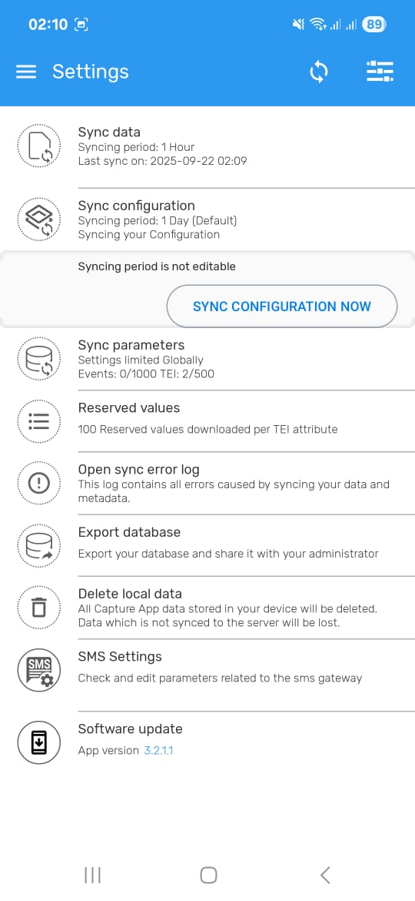

Enumerator App Guide
The Enumerator App is a mobile application for implementing partners to support participants who may not self-register. It facilitates structured data collection, onboarding, and performance monitoring at the field level.
The Enumerator App (DHIS2 Data Capture) is used by field officers to onboard participants into the system, capture assessments, and sync data with the central Propa Data server.
This guide explains how enumerators can Log in, Register Participants and Submit participants survey data.
The Enumerators App includes the following key modules:
-
Participant Registration & Onboarding: Implementing partners register and onboard participants onsite.
-
Activity Data Collection: Field staff capture real-time participant activity data including business profiles, market interactions, and product details.
-
Performance Tracking: Enables entry and monitoring of program targets, output metrics, and performance indicators.
-
Secure access: Secure and role-based authorized access
-
Also ensures data consistency and supports offline syncing
NOTE:
For Enumerators they are required to:
- Sync data at the beginning and end of each day in a place with a stable internet connection.
- Always Search participants first before adding/registering new participants to avoid duplicates.
- Complete all forms before submitting.
- Keep your device charged while in the field.
- Report any issue immediately if you experience system errors during onboarding or syncing
Download & Install the Data Capture App
You will first download the app from Google Play Store the DHIS2 Data Capture App.
Click the download button to install if not installed yet, Download.
Login
- Open the Data Capture App.
- Enter your Username & Password then paste the Server URL as below:
- Server URL:
https://portal.propadata.net/propadata
- Then tap the Login button to access the system.

- Upon successful login, you'll access the Home Dashboard featuring all available programs and surveys.
Participant Management
Searching for a Participant
- Select the relevant program or survey as directed.
-
In this demo, we will use the PropaData Integrated Questionnaire program
-
Enter a search attribute such as:
-
Phone Number
- First or Last Name
-
Participant ID
-
Then click the Search button at the bottom of the page to view search results.
Existing Participant
If the participant exists in the selected program, their full profile details will be displayed.
For example, the screenshot below shows an existing self-registered user:

Non-Existing Participant
- If the participant is not found within the selected program, expand the search to cover the entire platform by clicking on the Search outside this program button.
- If the partcicipant still is not yet registered in other programs, tap the + New Trader button to register/onboard them.

Onboarding A New participant
Select Organisation Unit
Each participant must be linked to their ward.
- Search by Ward.
- Select the correct location.
- Tap Done to confirm.

Adding Participant Attributes
After selecting the participants Organisation unit you will be directed to the participants registration form which you'll add now the participant details.
- Fill in all mandatory fields (marked with an asterisk *).
- A Participant ID will be generated automatically.
After completing to fill the form click on the save icon which is on the bottom right of the page with a blue background to save the participant details.
Preview Traders Form

Addind A Note
One can add simple notes from the notes section.

Survey Enrollment
After onboarding a participant, the available surveys which they can participate in will be listed. Select the appropriate survey to begin.
-
In this demo, we’ll use the PropaData Integrated Questionnaire survey as an example.
-
Click on the Enter Activity to open the enrollment form.
Completing a Survey Form
- Start by selecting the Enrollment Date and Assessment Date.
- Then proceed to enter the required survey fields according to your data collection protocol.
Saving Survey Details
- Once the form is filled in, click the blue Save icon at the bottom right of the page.
You’ll then have the option to:
- Complete – Save and mark the survey as finished.
- Not Now – Save the survey as a draft for review or completion later.

Adding Notes to Surveys
-
During data collection, you can attach notes for additional clarity.
-
To add a note, click on the Notes button to open the notes page.
- Tap + button to add your note.
- Type your note and save.
- Review any previously saved notes linked to the same survey.
Settings
- From the home page, click on the navigation bar (menu icon) to navigate to the navbar section.

üîë Important: Do not tamper or tap on the settings, apart from the one's highlighted below and how to go about them.
Set PIN Code
From the Side Navbar section click on the Set Pin with a (Padlock icon) where you'll be prompted to set a 4-digit PIN of your liking but Secure for faster login access.
üìù NOTE: After setting the pin you'll be logged out of that section and you'll be prompted to insert the New Pin which you have set to have access to the system again.

Sync Data
- Go to: Settings then click on the Sync data which is on the first row of the different settings.
- Enable: Sync Data Now if you have a strong stable internet connection but when under internet connection the sync happens automatically after every one hour.
- After the sync the Last sync on will update to the current time you have done the sync

Sync Configuration
- Still on the Settings click on the Sync Configuration which is on the second row of the settings.
- Enable: Sync Configuration Now if you have a strong stable internet connection but when under internet connection the settings auto update automatically after one day.

Reserved Values
Reserved values allow enumerators to register participants and collect data offline, by using pre-downloaded unique identifiers.
- Go to: Settings → Reserved Values

-
Click on the Manage Reserved Values .
-
From there you will be directed to another page indicating how many reserved values you have left, in this case it will be 100 then click on REFILL to have the reserved the values.

Manual Sync
For the Sync Data you can also do it from the Homepage section by clicking on the Sync Icon (top-right corner)
-
You should always Manually Sync before starting field work and after finishing the day under a stable internet connection.
-
This will update participant records and submit any unsynced data.
Successful sync
- After a successful sync a green notification will be displayed with sync successfull.

Sync Error
- Incase the sync fails the app will highlight the specific issue why the the sync has failed. But incase it still fails after making changes contact the administrators for more assistance.